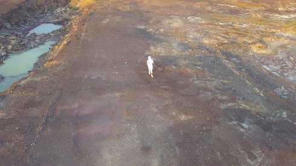

Diogo da Cruz

Diogo da Cruz geb. 1992 in Lissabon.
Lebt und arbeitet in München. Studium der Bildhauerei in Lissabon
und an der Akademie der Bildenden Künste München (Klasse Hermann
Pitz). Seit 2018 künstlerischer Mitarbeiter an der Akademie der
Bildenden Künste München.
diogocruz.net
Ausstellungen Sofia Underground 2017 |
Whiteconcepts Gallery, Berlin 2017 | FOCO Gallery, Lissabon 2018
Monitor Fest, Heraklion 2018 | Florence Trust, London 2019 | Various
Others 2019, München | Espacio de Arte Contemporáneo, Uruguay 2019
Wisdom Warriors
2019 | Video, Sound
12 min | Englisch
B+S+Performance+Text: Diogo da Cruz | K: Drohne
Ein sich permanent weiter entwickelndes Projekt, das unzählige Formationen annimmt: Objekte, Performances, Video. Das Kollektiv „Wisdom Warriors“ reagiert auf eine erwartete dystopische Zukunft durch technologische Disruption und Rebellion. Kann es wirklich sein, dass diese Gruppe sich aus dem Kunstwerk heraus im realen Leben formiert, vergrößert und emanzipiert hat, oder ist sie doch noch Teil der künstlerischen Narration? (Anja Lückenkemper)